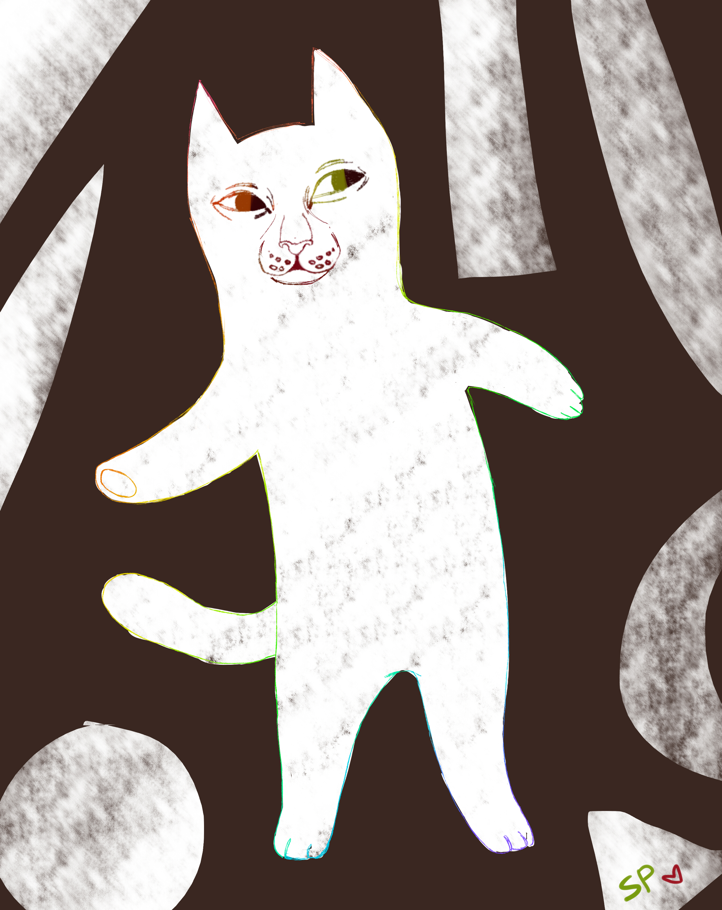

Spanri, люблю рисовать и есть мандарины, привет.
В 2011 году я нашла этот сайт и задержалась на нем аж 2 года! Я постоянно рисовала там, точнее анимировала и уже спустя месяц думала, что я крутой профессиональный художник. К слову, я ни разу тогда не работала в графическом редакторе лучше paint, да и анимации у меня были мягко говоря не очень... А еще у меня был планшет genius. Не берите genius.
И вот, однажды, на multator пришла крутая художница, нарисовала анимацию и оставила ссылку на свою группу вк. Это была Коул. После этого мне стало интересно, действительно ли вк есть еще художники со своими группами. И их оказалось море! Я скачала paint tool sai и принялась творить. И до сих пор творю.
Последнее время мне нравится осваивать новые программы. Я немного освоилась в adobe illustrator и adobe photoshop. Еще собираюсь скачать sketch и уже скачала corel painter...
Творец, помни: если тебе кажется, что у тебя ничего так вышло, это в 98% случаев не так!!!! Хотя у меня есть пара работ, которые мне нравятся до сих пор. В основном, это те работы, которые я рисовала очень долго. Или вдохновение было. Оно оооочень важно! У меня это музыка и чужие арты. Когда я просматриваю группы артеров, у меня начинают чесаться руки и я хочу творить! Нормально ли это? Надеюсь, да...
Имя: Козлова Анна Сергеевна
Кличка: Спанри
Дата рождения: 02,12,1997(16 лет)
Знак: Стрелец
Любимый цвет на данный момент: нежно салатовый
Многие думают, что я сумасшедшая. А я просто думаю, что коты клевые, а также о смысле жизни. Да, у меня часто возникают неожиданные неприличные мысли, но это же только мысли. Если ты хочешь со мной подружиться, то ты должен быть художником, не против манги и аниме, быть простым или сложным(XD)... Ну и не быть долбое*ом.
Я люблю спать. Очень. Но вечно не высыпаюсь. Я не понимаю анархистов. Кому я доверяю? Животным. Мечтаю о том, что бы жизнь стала легкой. И чтобы пропала из школы физика. И о хорошем зрении. Воспоминания? О том, как я раскрыла совй секрет детства. Брату. Как устраивала с друзьями бои на траве(даже не спрашивайте) и то, как строила с ними же крутой домик.
Меня раздражает лицемерство, возвышение себя над другими, даже самое маленькое. Бесит тупизм, момент, когда при разговоре тебя перебивают или вообще не слышат. Я каждый день: читаю мангу, слушаю музыку, играю в планш, учусь, воображаю на всякие темы, думаю о котиках, смысле жизни.